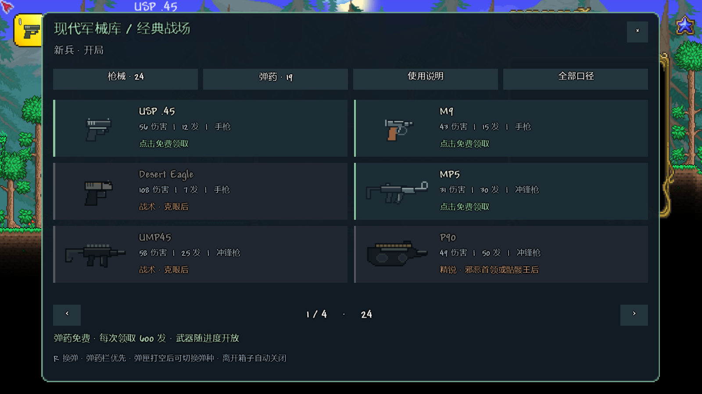
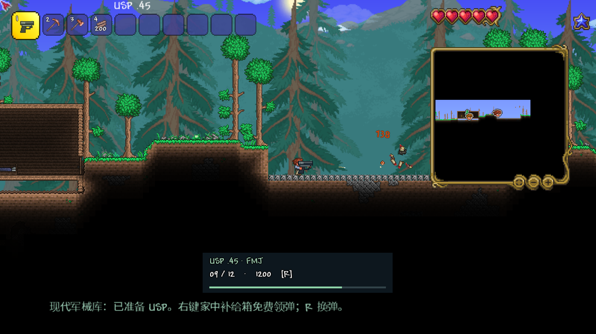

MODERN ARSENAL / CLASSIC BATTLEFIELDS
现代军械库 · 经典战场
以使命召唤经典现代枪械组成一套高伤害生存军械体系。开局 USP、家中免费领弹，从肉前一路推进到后期重火力。下列数值和游戏内容使用同一份目录。
24独立枪械轮廓
10 / 19口径 / 弹药种类
1034USP + FMJ 基础伤害
600每次免费领取弹药
24 把枪的独立动作 · 计入换弹的数值对照 · 改件实物资料与操作
装备与进度
新兵 → 克眼 → 邪恶首领或骷髅王 → 困难模式 → 任一机械首领 → 世纪之花。枪械与弹药均从补给箱按进度免费领取。R 换弹；弹药栏优先；切枪取消装填。用完弹匣后可改装其他兼容弹种。
弹药与弹道
高速弹丸每刻进行 8 次移动与碰撞。存在重力、水平速度损失、射程与远距伤害衰减。穿透只作用于目标，墙壁阻挡所有弹种；每穿透一名敌人，剩余伤害降低 15%。弹道数值采用游戏单位。
AP：穿甲与贯穿 JHP：低防目标增伤 Tracer：亮色曳光 Match：低下坠远射 Buckshot：8～9 粒霰弹 Slug：单发重弹，约保留全霰弹命中伤害的 78%
实际游戏画面
客户端内运行的真实补给界面与射击流程。完整验证记录保存在 artifacts 目录。

